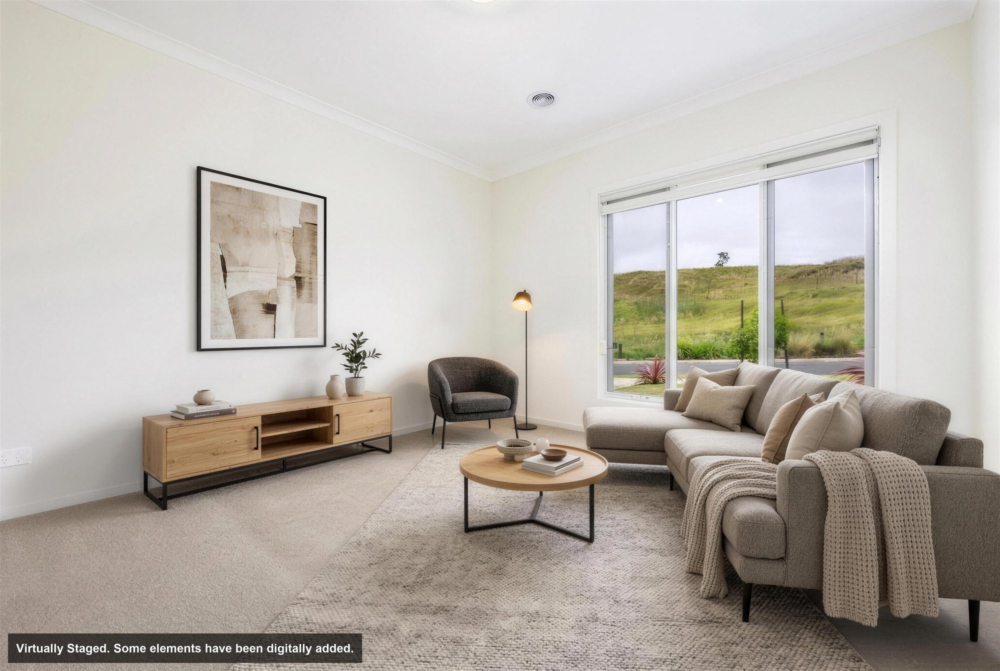
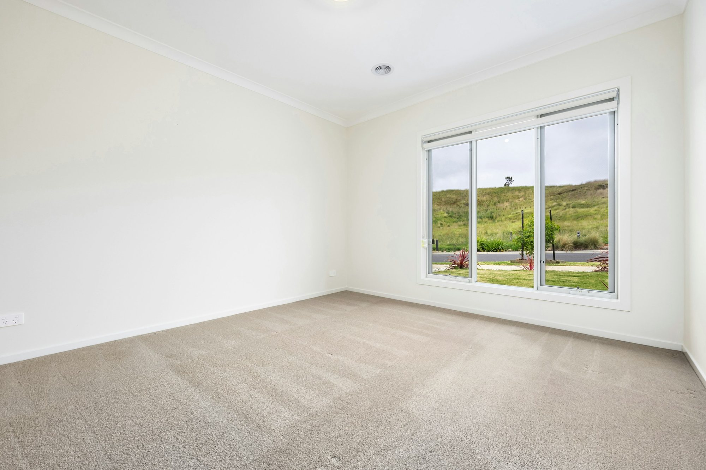
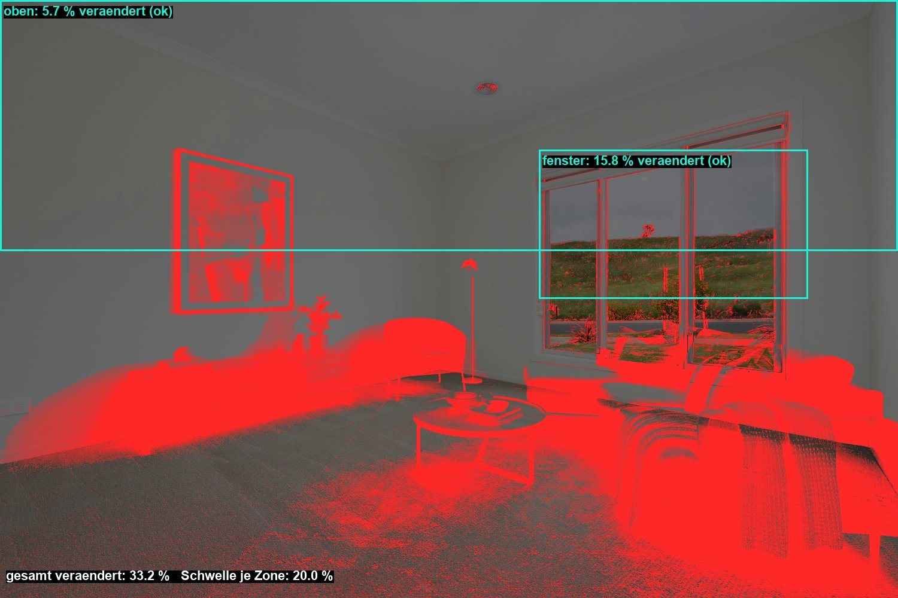

← panoart360.de · English site
EN: Sample proof page. Red in the difference map is every pixel the AI changed; furniture may be red, walls, ceiling and windows may not. Zones: oben = top 42 % of the frame, fenster = window area. Verdict ok = below the 20 % threshold.
Datum 29.10.2026 · Original: Unsplash-Foto (Lisa Anna), leeres Wohnzimmer · Markt us · Hinweistext: Virtually Staged. Some elements have been digitally added.
Geprüft wird, ob Wände, Decke, Fenster und Böden gegenüber dem Originalfoto unverändert sind. Rot in der Differenzkarte ist jedes Pixel, das die KI verändert hat; Möbel dürfen rot sein, Raumstruktur nicht. Dünne rote Linien an Kanten zeigen, dass ein Modell Fenster oder Wände um Pixel verschoben hat.


Schieber: links Original, rechts Lieferung · Liefergröße 4096x2751 (Original 3000x2000, Hochrechnung: 4k-Modell (wohnzimmer.png, 4096x2751))

| Zone | veränderte Pixel | davon zusammenhängende Fläche (Möbel) | mittlere Abweichung | Urteil |
|---|---|---|---|---|
| gesamt | 33.2 % | 26.0 % | 28.1 | ok |
| oben | 5.7 % | 4.1 % | 5.1 | ok |
| fenster | 15.8 % | 2.9 % | 10.8 | ok |
Lieferschein: lieferschein.json · Bilder hier auf 2.000 px verkleinert, geliefert wird in 4.096 px · panoart360, Koburger Straße 198, 04416 Markkleeberg · Impressum